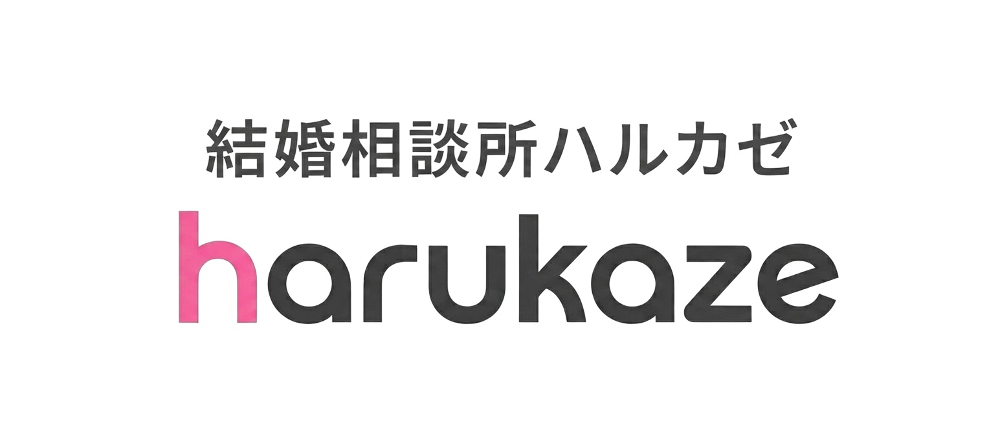
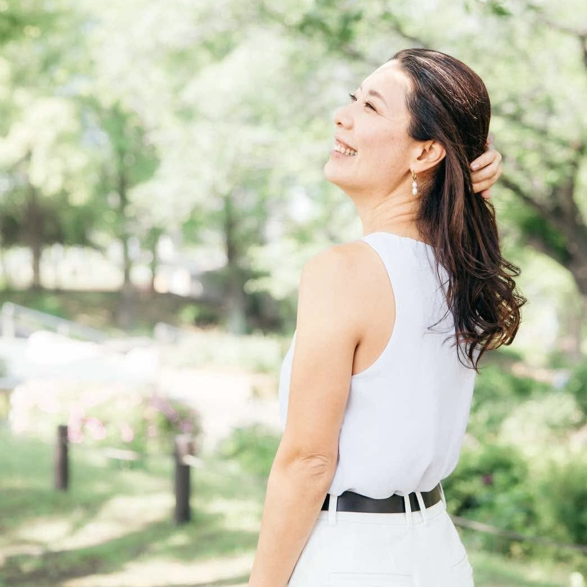
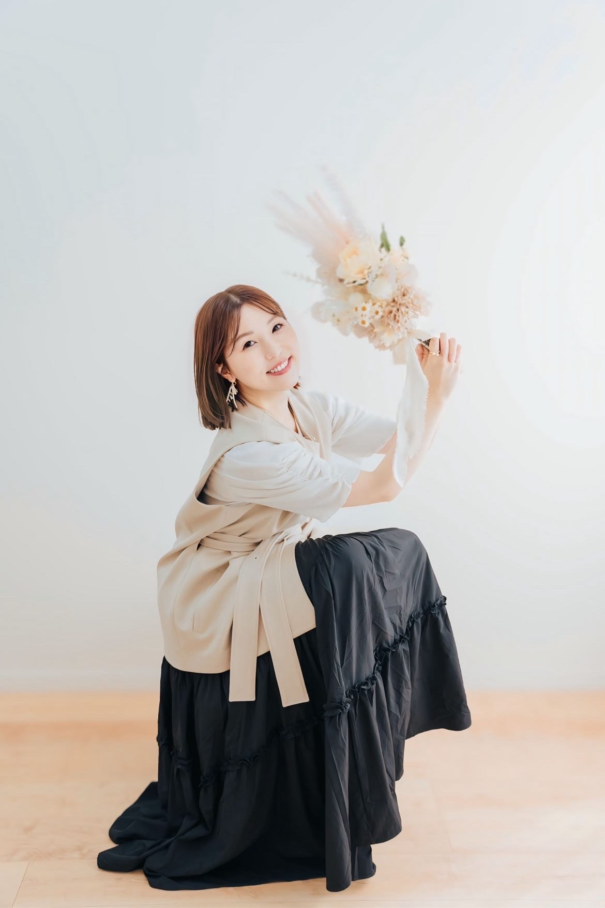
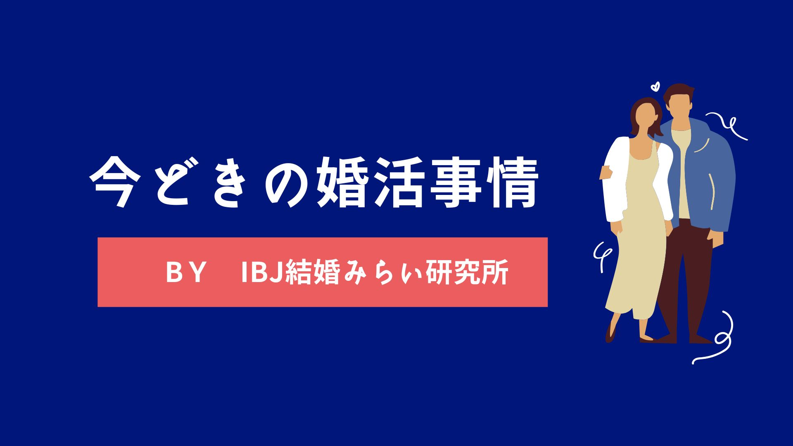

Trial Planお試しプラン
- 月会費
- 5,500円
１ヶ月お試し入会（お見合い成立または継続利用時は標準プランのいずれかに移行）
- 申込み30件/月、お見合い料０円
- 婚活ロードマップ作成
- プロフィール添削
- LINE・電話相談、個別面談（オンライン可）

IBJ正規加盟店｜大阪・北摂・吹田／オンライン全国対応
自分のやりたいことも、仕事も、好きな人との未来も。
誰かと生きる人生は、かけ算で広がっていく。
出会いから決断まで、寄り添います。
あなたにしか選べない人生を、ここから。
Steps
答えは、
「結婚する」って決めた人。
ハルカゼには、決めて、動けるサポートがあります。
「なんとなく好き」「なんとなく苦手」を言葉にして、自分の軸をつくる。
なりたい未来を描いて、見た目もプロフィールも整える。
IBJの10万人以上から、お見合い料や申し込み上限を気にせず出会う。
「なんとなく違う」で、すぐに終わらせない。
定期面談とLINEで、迷いをその都度整理。最後は、自分で選ぶ。
結婚相談所で出会ってうまくいく？
「結婚生活」まで見据えたサポートも用意
そのために、それぞれの分野の専門コーチが、あなただけのお悩みをサポートします。
COACH 01
スミス 知美パートナーシップ・ライフコーチ

PHOTOCOACH 02
本間 知尋パートナーシップ・ライフコーチ
COACH 03
セクシャルウェルネスコーチ・精神対話士

PHOTOCOACH 04
TOMOMIイメージコンサルタント
「こうあるべき」がたくさんあって、がんばるほど空回り。
何かを変えなきゃと、むやみやたらに頑張っていたけど、あの頃の私に必要だったのは、
まず「どうしたい？」と、ちゃんと聞いてくれる人でした。
だから私は、あなたの「本当は、どうしたいの？」が見つかったら、全力で応援したい。
正しいより、楽しく。
自分で選んでいく人生は、きっと楽しいで溢れてく。
ずっと「人と関わる仕事」をしてきました。
年代も立場もちがう、たくさんの人と話すなかで、その人らしさや、人と人との相性を見る目を、自然と鍛えてきました。
今は、かつての私と同じように悩む方の目線に立って、気持ちに寄り添うだけで終わらせず、具体的な改善と行動まで、一緒に落とし込んでいきます。
Course
金額はすべて税込です。どのプランも、お見合い料は無料です。
１ヶ月お試し入会（お見合い成立または継続利用時は標準プランのいずれかに移行）
CAMPAIGN
他社乗り換え割引キャンペーン
33,000円 OFF
Flow
01
現状と目標を整理。費用・期間の説明も丁寧に
02
あなたの魅力を言語化。プロフィール・写真を戦略的に磨き上げる
03
IBJ 10万名超からマッチング。事前準備を徹底サポート
04
定期面談で関係の深め方を伴走。悩みをすぐに相談できる
05
プロポーズのタイミングや準備もサポート
よくある質問
IBJで活動いただくための活動条件がございます。面談のうえ、ご希望に添えない場合など、入会をお断りさせていただくことがございます。
直接お会いしてお話させていただくか、オンラインにてご案内いたします。
オフィスを持たないことで価格を抑えたご案内を行っております。オンラインでのご案内が基本となりますが、必要な場合にはカフェや、ヒルトン大阪内IBJラウンジをご案内させていただく場合もございます。
すべて揃っていれば可能です。ただし提出書類はその方によって用意いただくものが異なることと、古い書類では受付できない場合があるため、初回面談後にご準備されることを推奨しています。
事前にLINE登録やアンケートをお願いしております。詳しくは、当日までに担当からご案内させていただきます。初回面談では、現状のヒアリングやサービス説明を行います。
以下の書類が必要となります。
・身分証明書のコピー
・住民票
・独身証明書（3か月以内取得の原本）
・卒業証明書コピー（短大卒以上の方）
・国家資格免許証コピー
・収入証明書
・勤務先確認書類コピー
※当社で必要とする情報以外は取得および保有をいたしません
独身証明書とは独身であることを証明する公的な書類で、本籍のある市区町村で結婚情報サービス・結婚相談業者に提出する証明書として発行していただけます。郵送等でのご請求方法や、発行手数料、請求に必要な書類（本人確認書類など）は、本籍のある市町村区役所・役場の公式サイトでご確認いただくか、電話でお問い合わせください。
結婚相談所に入ることを迷っていても大丈夫です。一度無料面談にお越しください。今のあなたの状況からどの手段で婚活するのが最適かアドバイスします。
無料相談で強引な勧誘をすることはありません。ご自身が決断されたタイミングで、気持ちよく動いていただくことが成婚にも繋がると考えています。
成婚とは、一般的には交際相手が見つかり、結婚の意思がみえた段階で活動を終了することを意味します。ハルカゼではプロポーズをして結婚を約束したお二人を「成婚」と位置づけています。
面談はオンラインです。お見合いはホテルのラウンジやカフェ、IBJラウンジをご案内させていただきます。
20日までのお申し出で当月退会、以降は翌月退会を承ります。活動費用を先にいただいている場合、活動されなかった退会月以降分は返金させていただきますのでご安心ください。
お試しプラン（月会費5,500円）、ライトプラン（月会費11,000円）、パーソナルプラン（月会費15,800円）の3種類がございます。詳しくは料金プランをご覧ください。無料面談でも丁寧にご説明します。

BANNERバナー画像